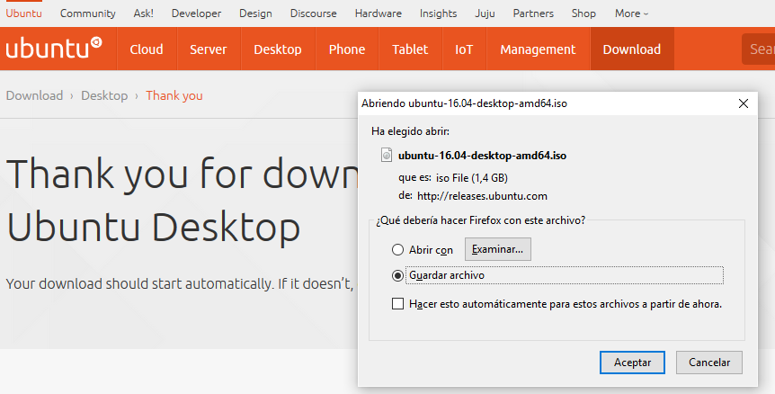
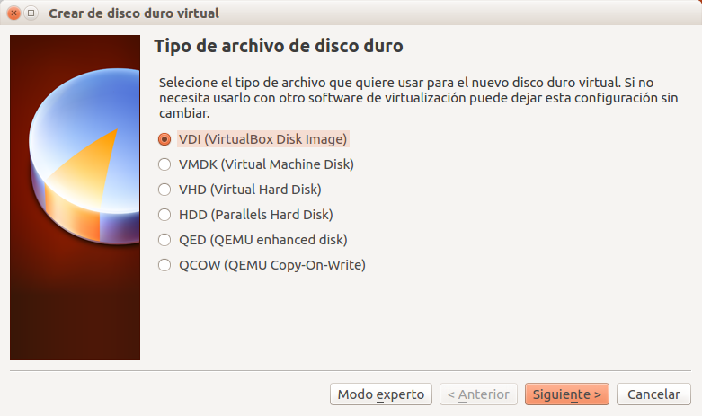
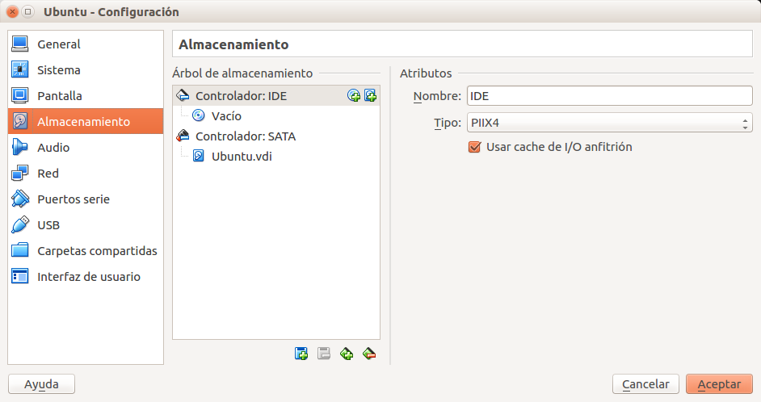
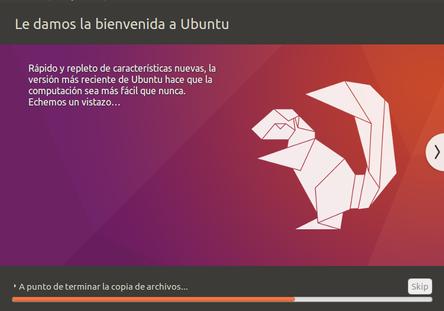
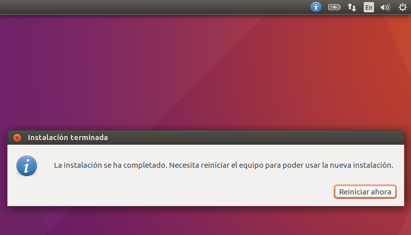

Permite instalar un Sistema Operativo dentro de otro.
2.2 Descarga
https://www.virtualbox.org/wiki/Downloads
2.3 Instalación
Elegir la versión adecuada para el Sistema Operativo que tenemos instalado.
Intalar de la forma habitual dependiendo del Sistema Operativo instalado.
3 Descargar Ubuntu
3.1 Ubuntu
Ubuntu es una districución Linux muy utilizada.
3.2 Enlace
http://www.ubuntu.com/download/desktop
3.3 Donativo
Al pulsar el botón "Download", nos lleva a una página para realizar una donación, y si no queremos donar y continuar pulsamos en la parte inferior en "Not now, take me to the download".
3.4 Descarga
La descarga coomenzará automáticamente, pero si no lo hiciera pulsamos sobre "download now".

4 Crear Máquina Virtual
4.1 Abrir VirtualBox
Abrimos VirtualBox:
4.2 Nueva Máquina Virtual
Pulsamos sobre "Nueva" para añadir una nueva máquina virtual.
4.3 Nombre Máquina Virtual
En el asistente insertamos en el nombre "Ubuntu".
4.4 Memoria Máquina Virtual
Elegimos la cantidad de memoria reservada a Ubuntu:
4.5 Crear Disco Virtual
Seleecionamos "Crear disco virtual ahora".
4.6 Tipo Disco Virtual

4.7 Tipo Almacenamiento
Seleccionamos "Reservado dinámicamente".
4.8 Ubicación y Tamaño
Podemos seleccionar la ubicación y el tamaño del disco virtual.
4.9 Finalizar
Si todo ha salido bien nos aparecerá la máquina recién creada en VirtualBox.
4.10 Configurar Máquina Virtual
4.11 Abrir configuración
Seleccionamos máquina recién creada y pulsamos en "Configuración".
4.12 Configurar almacenamiento
Pulsamos sobre "Almacenamiento".

4.13 Seleccionar CD Virtual
Pulsamos sobre el icono "CD" del cuadro "Árbol de almacenamiento" del árbol "Controlador:IDE" que aparece vacío.
4.14 Buscar archivo
Pulsamos en el icono "CD" de la parte de la derecha.
4.15 Seleccionar ISO
Buscamos el archivo ISO de Ubuntu anteriormente descargado.
4.16 Cerrar configuración
Si todo ha salido bien nos aparecerá el ISO en la configuración.
4.17 Finalizar
Si todo ha salido bien nos aparecerá la máquina con la ISO en VirtualBox.
5 Intalar Ubuntu
5.1 Iniciar Máquina Virtual
Pulsamos sobre el icono de "Iniciar", y el sistema empieza a cargarse.
5.2 Seleccionar idioma
Seleccionamos "Español" y pulsamos en "Instalar Ubuntu".
5.3 Descagas opcionales
Podemos seleccionar ciertas Descargas opcionales.
5.4 Tipo de instalación
Seleccionamos "Borrar disco e instalar Ubuntu".
5.5 Adevertencia
Acepamos la advertencia de "cambios en los discos"".
5.6 Ubicación
Introducimos "Madrid" como ubicación.
5.7 Teclado
Seleccionamos el "tipo de teclado" de nuestro ordenador.
5.8 Usuario y contraseña
Introducimos "Usuario y contraseña".
5.9 Esperar
Esperamos a que la instalación termine.

5.10 Reiniciar
Pulsamos en "Reiniciar ahora"

5.11 Pulsar ENTER
Pulsamos "ENTER" para finalizar.
5.12 Cargar Ubuntu
Después del último paso se carga Ubuntu.
5.13 Apagar Ubuntu
Pulsamos en el botón situado en la parte superior derecha.
5.14 Finalizar
Aparece una ventana y pulsamos "Apagar"
5.15 Rearancar
La próxima vez que queramos ejecutar el sistema pusaremos en "Iniciar".
6 Importar Máquina Virtual
6.1 ¿Qué es eso?
Podemos importar máquinas anteriormente creadas.
6.2 Importar VDI
Creamos una máquina virtual igual que antes, pero al crear el Disco Virtual seleccionamos el archivo VDI.
6.3 Importar OVF
Pulsamos en "Archivo > Importar servicio virtualizado..." y seleccionamos el archivo OVF.
6.4 Exportar OVF
Para ello pulsamos en "Archivo > Exportar servicio virtualizado..." y seguimos las instrucciones.